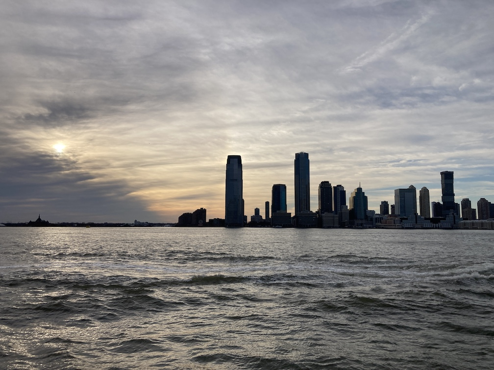
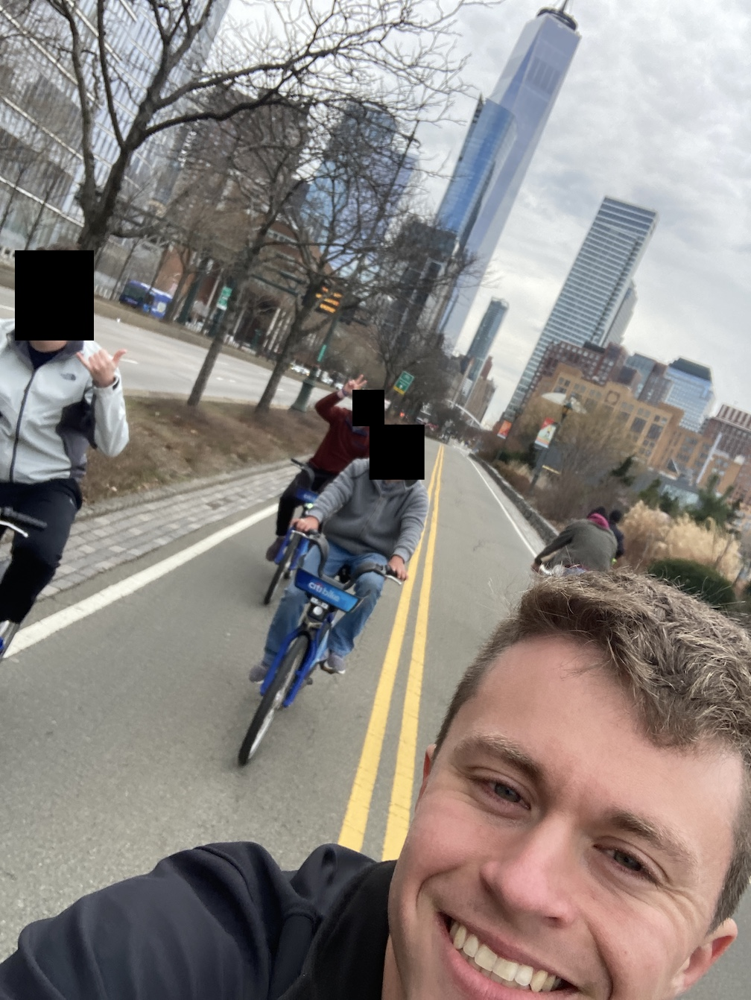
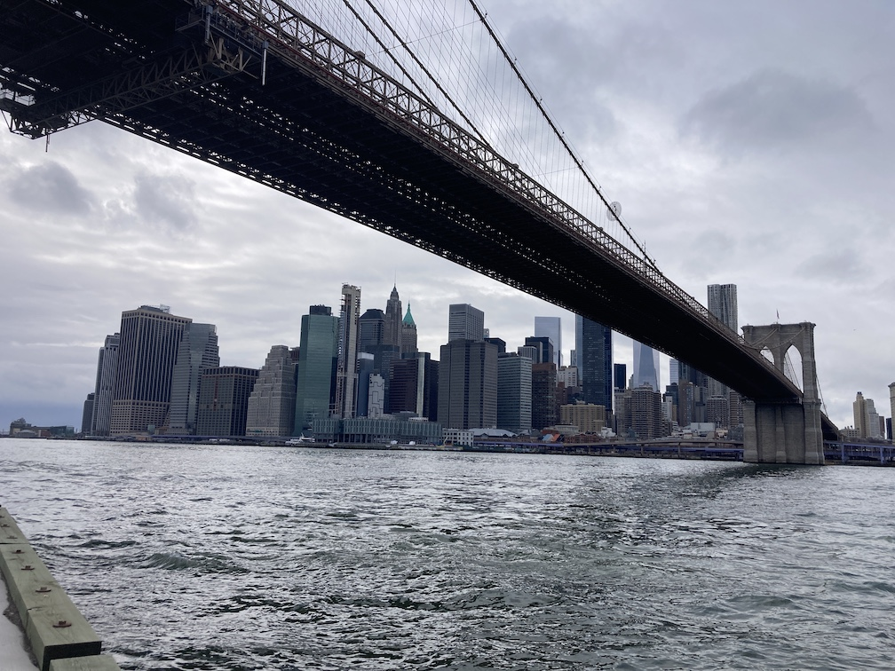
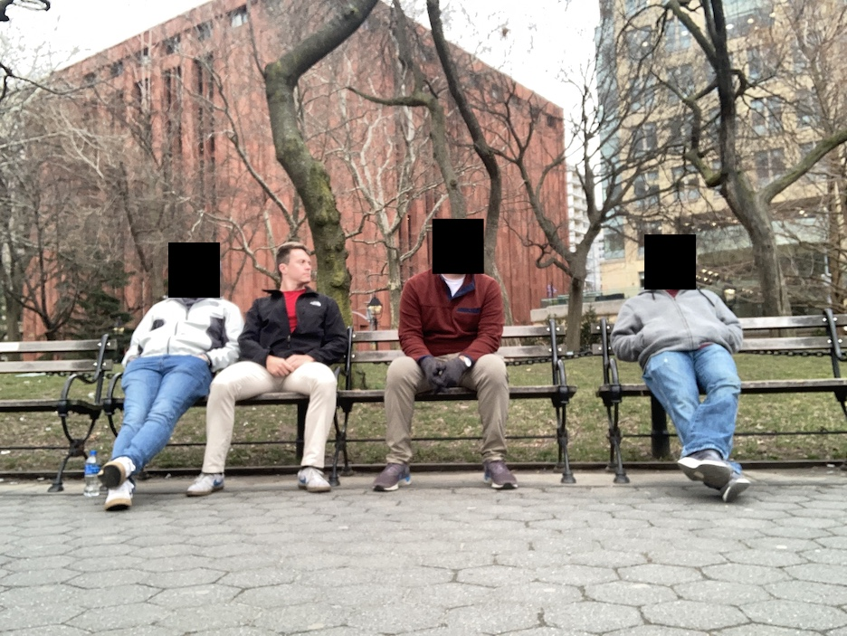
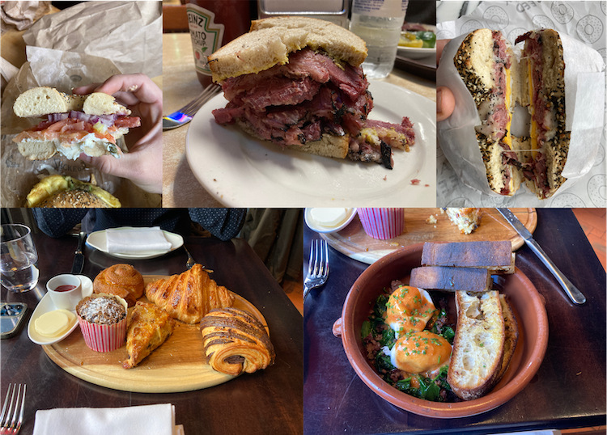

New York City trip report from 01-05 March 2023.
The trip did not start off as desired, for I was waitlisted—yes, waitlisted—at the Capital One Lounge in DFW. The card I pay a high annual fee had two women blocking the entrance taking names and claiming the lounge was full. I begrudgingly put my name down and was called 45 minutes later, giving me a chance to quickly chug some flavored sparkling waters, eat some entrees, and savor the delicious cookies before catching my flight.
The flight was uneventful besides me possibly scarring the five-year-old next to me when he saw the scene in Shaolin Soccer where the fat guy eats an egg out of another dude's mouth. So many questions that I wouldn't have answered had he asked. I landed smoothly, called an $80 Uber and was on my way into the big city all while listening to the driver tell me about the crazy antics he's seen (rich Hampton bros, attempted threesomes in the back seat, super high guys leaving all their stuff in the car while they aimlessly run around yelling—you know, New York typa stuff).
I arrived at my friend E's apartment around 11:15pm and it was on. No lounging around. I was here to explore and by God was I going to. First stop was food: even at midnight there were a helluva lot of pizza places open, and what better way to kick off a NYC strip than a few slices? With my hunger kept at bay for the next hour, it was onwards to Terra Blues, "a modern-day blues saloon with a second floor view of Bleecker Street in the heart of Greenwich Village". We had a few drinks while enjoying the music and conversation then continued on with our late-night walking tour. I snagged a lamb over rice for $10 cash (side note: cash is m'fin king up here, carry a lot) and ate in the warm of the subway station. We exited near Bowling Green and had to check out the Charging Bull, and more importantly, touch its balls... you know, for good luck!
We visited Trinity Church, a beautifully-constructed church where Alexander Hamilton and a few other prominent early Americans are buried. Weird to think that 200+ years later people are still walking by his bones! A short walk later and I was conked out on a comfy air mattress in a comfortably warm apartment.
The city felt strange that night. There were almost zero people out, and for good reason: who the heck is out at 3:00am on a Wednesday night? And yet spaces that were normally bustling with activity and the smells of food and sounds of different languages and sights of eccentric and modern fashion were just plain empty. There wasn't a 50-person line waiting to touch the Bull's nuts, nor were pizza shops hustling to serve the dozen customers they had waiting, nor was there any trouble finding a set of seats on the subway with plenty of distance from the crazy person muttering to himself. While I have no idea if this a legitimate word or not, kenopsia fits the feeling pretty well:
the eerie, forlorn atmosphere of a place that’s usually bustling with people but is now abandoned and quiet—a school hallway in the evening, an unlit office on a weekend, vacant fairgrounds—an emotional afterimage that makes it seem not just empty but hyper-empty, with a total population in the negative, who are so conspicuously absent they glow like neon signs.
I woke up around 10:00am and was instantly ready for a bagel sandwich. We walked over to Brookfield Place and got rather expensive, yet still rather delicious, bacon, egg, and cheese sandwiches for sustenance before starting the day. And with that, we started walking. We somehow made it to Times Square for a touristy glimpse at the most famous intersection in America, then continued on to Hell's Kitchen where we noticed something strange given it being mid-morning on a Thursday: there were a lot of kids out and about. Some had backpacks, some didn't, some were with peers, some weren't, some were TikToking, some weren't. We chalked it up to "who cares" and found some Citi bikes to finish up the remaining four miles back to the apartment.
Six miles later of west side scenic riding and fast flybys by desperate delivery riders we were outside of Pace University watching tens of students exit their midday classes. I often think about how or if I'd be different had I grown up in a major city. College me probably wouldn't have found it very interesting given my choice of activities (school, work, and exercise with very little in the way of fun), but who knows—if current me could tell high school me a few things, one of them would be to try harder to get into an urban university. (Not to say I regret my time at a rural university, but all things equal university-wise a city beats out country in most other categories.) Seeing these kids get to live in and go to school in the heart of New York gave me a pang of FOMO.
We met our two other friends, D and A, at the apartment before setting out for the evening. First stop: Applebee's in Times Square. D, E, and another one of their friends supposedly racked up a $600 bar tab of exclusively green tea shots in a single night, and while we weren't planning on besting that, we still want to have a few drinks. That excitement quickly deflated (fart noises included) when it took us 15 minutes to get our first drink. Another 20 minutes brought us to Margaritaville's rooftop bar where we had a couple of margs and enjoyed the expansive view of the city at night.

Where to next? If you guessed Terra Blues, the exact same blues club we went to the night before, you'd be right. But this time was different: Grammy-nominated Junior Mack was playing. And they played. Hard. Guitar solos galore with a healthy mix of drums and vocals made for some awesome music. Drinks were surprisingly cheap: we downed 15+ and it came out to $144... just another reason to like the club! The people watching there was excellent and pretty representative of NYC in general.
A late night pizza cap was in order before heading home.
What's a New York breakfast if it doesn't include a bagel sandwich? A and I agreed upon getting two different bagels at Zucker's and splitting them in half to maximize our taste buds' euphoria. (This practice should be standard for most restaurant outings, especially if it's a new location or cuisine.) I got The Traditional on an everything bagel: "Nova Scotia salmon, plain cream cheese, beefsteak tomatoes, red onions and capers." So. Freaking. Delicious. This further cements my belief that if something sounds even slightly weird but it's still on the menu, try it. It's there for a reason.
After some bickering about downloading an app, D and A got hooked up on bikes and we were off to the races, AKA Edge, AKA the tallest public terrace in New York, AKA vertigoer's nightmare, AKA massive tourist attraction which we absolutely contributed to.
We took our pictures and headed up to the lounge to relax with a few drinks and enjoy the view a bit more. Tip: if you're up in the lounge, make sure to go to the bathroom directly at the end of the hall. It's without a doubt the best toilet view I've ever experienced (read: paid $50 for). We walked The High Line and made conversation about what it would be like to live at eye level of the hundreds of strangers passing by per day.
Next up on the food tour was Katz's Deli, a kosher deli serving over 20,000 lb of meat every week! A and I did our now-standard order-separate-items-and-split thing with me getting the pastrami and him the corned beef. They fell apart immediately after my teeth sunk in, but hey, that's what forks are for.
We headed to the next high-rise terrace of the day: E's office. Located on a high floor of a tall building, it overlooked Manhattan for miles, giving a perfect view of some of NYC's most iconic skyscrapers. We enjoyed drinks (La Croix for me), snacks, a few games of pool, and lively conversation on our career and other topics.
After a long day of walking and sightseeing (and I'm sure the decent amount of alcohol we had contributed) everyone was tired to the point of calling it a night. No way I was having that. I offered to pay for the Uber to a nice restaurant if I could find one, and find one I did. Cotenna was cozily nestled in a row of commercial and residential buildings off Bedford and Houston (pronounced how-stun for whatever reason...). The lighting was dim and mood romantic, a perfect ambience for us four men to sit together in. Appetizers included Costicine di Agnello (grilled lamp chops, balsamic vinegar, roasted potatoes) and bruschetta. A and I again shared (because romantic ambience) a truffle gnocchi dish and some lamb special I cannot remember the name of. Freaking delicious all around. Drink-wise was a couple of their signature gin cocktails.
We hopped on the subway and walked into what would be the first interesting subway experience of the trip. E sat down two seats away from some guy (so one seat between them), causing the guy to move across and say "I don't know you that well". Ultimately it led to something like this:
Me: Woah! You don't know my boy [full name]. He's a great guy!
Him: I'm French!
Me: I'm English
Him: You fucked a lotta people over throughout the years
Me: Easy with the accusations, my man. That was my ancestors. I haven't done shit!
Him: Where you from?
Me: Texas. Can't you tell?
Him: Bullshit. You ain't from Texas.
Me: How the fuck do you know where I'm from? Where are you from?
Him: Mothafucka you ain't from Texas. I'm from New York, baby. Bay Ridge. If someone tells you they're from New York they're bullshittin' you.
Me: You just said you were from New York!
Him: You don't know shit!
It ultimately ended with me giving him a fist bump and my friends chastising me for engaging a crazy on the subway. Worth it!
We stopped at The Malt House and got a cool tour of the areas still under construction thanks to me smooth talking.
I headed home for some rest while the guys headed out to drink more.
We left the apartment around 10:00am and headed for Brooklyn, opting to take the Bridge out while fresh and the ferry or subway back while tired. The bridge had vendors selling useless souvenirs, young people taking Instagram pictures, runners, and others from many walks of life. We made it to the other side and spent the next 30 minutes exploring the parks and area around Dumbo (Down Under the Manhattan Bridge Overpass). Pedro's called out to us as native Texans, prompting a stop there for an early lunch of tacos.
We took the five-minute ferry ride back to Manhattan, made our way back to the apartment for a change of clothes and bathroom break, then started on what would be (or at least feel like) the longest walk of the trip. We hit up a bunch of places: Washington Square Park for people watching, Grand Station Terminal for talking to each other through walls, Flatiron Building for looking, Harry Potter Store NYC for window shopping and messing with employees, Trump Tower for the memes, The Naked Pig for drinks (shoutout the Snakes Bites: blanco tequila, melon liqueur, lime, jalapeño agave, domaine de canton, sea salt, chili threads), Insomnia Cookies for disappointing dessert and an incredibly rude employee, and finally The Irish American for the Jones-Gane fight (and pizza afterwards, of course).
D and A were gone by 10:00am, leaving the rest of the day to me and E. I planned a bit ahead and got us reservations at Locanda Verde, where we shared the chef's selection of pastries with homemade jam and cultured butter and I got the Uova Modenese with cotechino hash, spinach, tomato hollandaise. Delicious with a great vibe! We walked the shoreline on the way home, enjoying the cloudless, blue sky and comfortable temperatures.
The rest of the afternoon was spent lazing around the apartment watching Seinfeld and cleaning up to the sound of blues and Green Day. I got a $100 Uber back to JFK, pushed through security in about seven minutes (thanks, PreCheck!), and hung out at the gate for my plane to arrive.
Paul Graham does a wonderful job of explaining a certain vibe that New York gives off in his Cities and Ambition:
Great cities attract ambitious people. You can sense it when you walk around one. In a hundred subtle ways, the city sends you a message: you could do more; you should try harder.
The surprising thing is how different these messages can be. New York tells you, above all: you should make more money. There are other messages too, of course. You should be hipper. You should be better looking. But the clearest message is that you should be richer.
Even without interacting with people the "you could do more; you should try harder" atmosphere is abundant. I attribute it mostly to the fame and reputation of New York as a city: it's where Wall Street is, where the ultra-wealthy purchase luxury penthouses that they never visit, where there are 12,000 Goldman Sachs VPs, where big names in music and showbiz got their lucky breaks, where you become successful.
This isn't so prevalent in other cities. I don't feel much of it in Dallas, except when I'm going out with friends downtown, but even then it's a weak signal. I definitely don't feel it in my hometown despite it being a top 10 largest city by population. I didn't feel it in Chicago nor Philadelphia. The closest was in Berkeley, half because of the community and people I was staying with and half because of the city itself (UC Berkeley just oozes the love and need for knowledge). (I'm also sure part of my newfound motivation to work harder in all aspects of my life was partly due to one the friends I was with who works his ass off, but that wasn't the entirety of the source.)
This all makes me wonder how to make said motivation sustainable when not in a so-called "great city" (*cough* Dallas *cough*). I think finding an enclave of similar people or a physical environment of ambition (or a combination of both, although the former almost always follows the latter) is one way of going about it. Live downtown where the people appear to be rich (after all, appearances are all that really matter here); go to gyms where people are fit; participate in intellectual clubs where people are smart. Digital connections are rarely enough to sustain the motivation—physical interaction and proximity matters greatly.
The subway creature is a well-known phenomenon, much like People of Walmart (even if the brand isn't known, the stereotype is). But given the notoriously high rent of New York and its boroughs, how do these people function and operate? Where do they live? How do they get money?
It reminds me of the YouTube version of Humans of New York, a channel called Sidetalk that goes around documenting all the crazy shit happening around NYC:
I couldn't find any info or Soft White Underbelly-esque interviews.
The food up here is like no other. So many restaurants, so many different cuisines, the portions excellent. NYC has 65 Michelin-starred restaurants as of 2022, and while I didn't get to eat at any of them this time around, I'll definitely plan for one on my next visit.
It's also one of the reasons I can never move there. I'd spend a LOT more money on food and eat even more calories than I do now, both of which would lead to dark places.
$200 of Uber rides.
45 miles walked (in some rather shitty walking shoes, mind you).
10 slices of pizza.
Two Elf Bars.
One time saying "I'm walking here!".
Countless jaywalks.